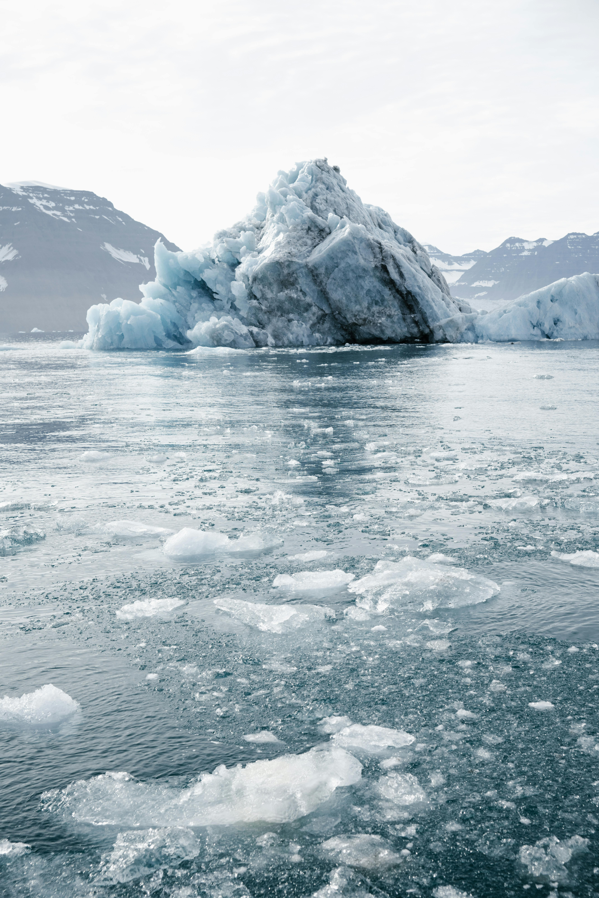
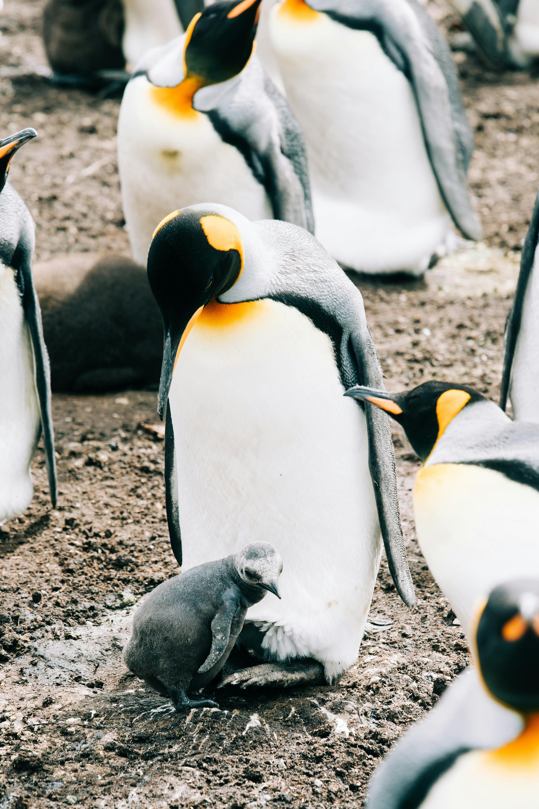

Küresel Isınmadan Etkilenenler

Doğa
Küresel ısınma yüzünden buzullar eriyor ve deniz seviyesi her geçen gün yükseliyor. Yüksek basınç farklarından dolayı şiddetli rüzgarlar meydana geliyor.

Canlılık
Ekosistem gittikçe bozuluyor.Çoğu hayvan göç mevsimlerini karıştırıyor. Yüksek sıcaklıklar sebebiyle hayvanlar telef oluşturuyor ve soyları tükeniyor.

İnsanlar
Sıcaklık değişimleri sebebiyle insanlard daha fazla hastalıklara, ölümlere, kalp rahatsızlıklarına rastlanıyor. Sıcaklığa bağlı ölümler artıyor.